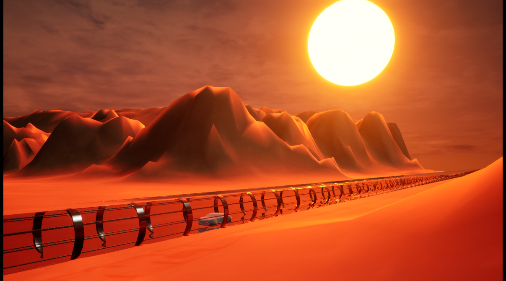

Nos activités
Découvrez la planète rouge avec nos différentes activités.

Visite dans les tunnels de Mars
Profité d'une visite dans un vaisseau à la surface de Mars.

Reserve naturelle de Korolev
Visitez le cratère de Korolev et découvrez les reliefs martiens, des paysages inédit à vous couper le souffle

Voler en jetpack pour découvrir Mars
La randonnée vous ennuie ? Découvrez la randonnée martienne grâce au Jetpack Aris.